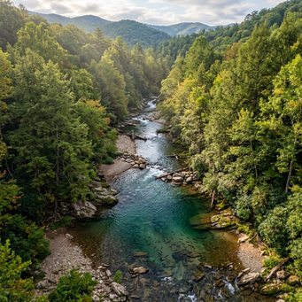
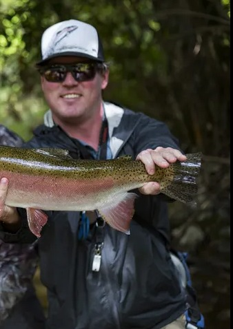
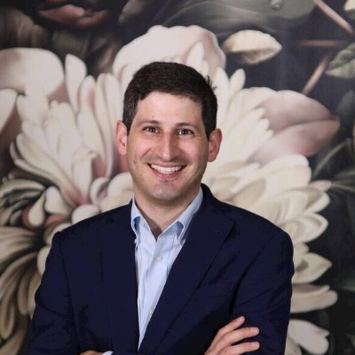

We combine advanced fluvial geomorphology, native bioengineering, and real-time IoT stream monitoring to stabilize banks, lower water temperatures, and generate high-yield USACE Savannah District stream mitigation credits across North Georgia.
Traditional hard civil engineering accelerates water flow, destroys habitats, and increases downstream erosion. We utilize Natural Channel Design (NCD) to restore streams back to their stable bankfull geometry.
Wild trout are highly sensitive indicator species requiring specific, coldwater conditions to survive and spawn:
Rapid regional development and road erosion cause peak stormwater runoff that destroys old mountain streams:
We use native wood, logs, root wads, and boulder cross-vanes to stabilize channels and trap sediment naturally:
Hunter Morris's years guiding wild trout trips on Fly Fishing North Georgia revealed a painful truth: North Georgia’s legendary trout reaches are being destroyed by silt and heat. Here is how geomorphic stream restoration saves these waters.
Standard contractors look at streams as drainage ditches. They pile up heavy granite rip-rap, straighten channels, and clear trees to control erosion. This is a disaster for trout. It speeds up current, raises temperatures, obliterates holding pools, and silts over critical gravel spawning beds.
Trout don't just need water—they need structural complexity. They need deep holding water under banks, cold thermoclines, swift food-producing riffles, and gravel nesting riffles (redds) that are clean of sand.
We rebuild streams utilizing bankfull ratios that naturally transport gravel, keeping channels stable for generations.
We install organic wood debris, tag alders, and boulder vanes that double as protective overhead cover for trophy brown trout.
Constructed of natural hemlock and oak logs to trap uphill logging sand, scouring deep plunge pools for large trout refuge.
Interlocked hardwood root balls driven into eroding meanders to buffer current velocity while offering wild trout premier shade.
Angled timber structures that focus the stream's kinetic power into the center, flushing clay to uncover critical spawning gravel.
Custom solar-powered sensor boxes measure dissolved oxygen and water temperature 24/7 — delivering continuous data that exceeds USACE annual monitoring requirements and accelerates credit releases.
Walk through our geomorphic showcases in North Georgia—demonstrating commercial credit yield and private landowner trout habitat optimization.
Located on a 30-acre lot at Anderson Creek, this project represents our flagship commercial stream mitigation showcase. We are restoring 2,500 linear feet of heavily eroded perennial stream, converting it from an unstable, overwidened channel to a stable Rosgen Class C4 gravel-dominated meander.
By reconnecting the channel to its historic floodplain and planting a 100-foot native riparian buffer, this project generates high-yielding stream credits under the USACE Savannah District SOP.

Located along the legendary wild trout waters of Noontootla Creek, this steep mountain tributary project serves as our premium private landowner showroom. We designed and built natural log step-pools and sediment traps to capture high-velocity stormwater and unpaved road sand runoff before it enters Noontootla Creek.
This "living showroom" demonstrates to private estate owners how bioengineering stabilizes cabin creek banks, cleans spawning gravel, and scours beautiful plunge-pools for trophy trout.
Bringing together extensive regional real estate investment expertise, regulatory permitting relationships, and advanced geomorphic design capab


Co-Founder & Managing Director • Board Member
Principal and owner of Fly Fishing North Georgia. Expert fluvial geomorphologist with 15+ years of guiding and stream hydraulic experience in Gilmer and Fannin counties. Hunter combines technical Natural Channel Design (NCD) with live soil bioengineering to build pristine wild trout sanctuaries that naturally transport sediment and protect shorelines.
Principal at Granite Holdings and General Partner at Infill Capital Partners. Alumnus of the University of Virginia (UVA) and Harvard Business School (MBA). Leading regional real estate, industrial logistics, and asset investor, providing capital governance, underwriting structures, and strategic B2B scaling.
If you own agricultural pasture or mountain forest land in North Georgia with at least 500 feet of degraded or eroding stream corridor, we can fully design, permit, construct, and maintain a pristine wild trout sanctuary at **zero out-of-pocket cost to you**. Furthermore, you receive a **30% share of generated USACE stream credits**, yielding substantial risk-free cash flows!
Mitigation banking under the U.S. Army Corps of Engineers (USACE) Savannah District allows us to transform your degraded, eroding streambed into a valuable ecological asset. Because our team absorbs 100% of capital risks—funding the geomorphic survey, complex HEC-RAS hydraulic models, buffer native plantings, and mandatory USACE construction bonds—you enjoy a risk-free partnership.
Are you a commercial developer facing compensatory stream credit offsets under USACE Individual Permits or State EPD Buffer Variances? We provide fast-tracked Nationwide Permit 27 credits in Georgia basins.
Coosa, Etowah, Upper Chattahoochee, Toccoa/Ocoee
Savannah District USACE Stream Mitigation Ledgers